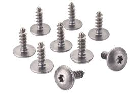
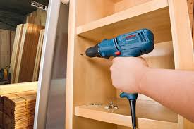
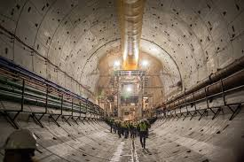

La nueva generacion de tornillos de automoviles

Una iniciativa conjunta entre Renault y Nissan para desarrollar una
nueva generación de tornillos que reduzcan el peso de los
automóviles. Un vehículo puede contener hasta 12 kg de tornillos, y
el objetivo es disminuir ese peso en 1 kg usando tornillos con
cabeza hueca.
Enlace al sitio oficial
La nueva sensación: Bosch GSR 7-14 E, de 400 W y está al precio
mínimo

El taladro atornillador eléctrico Bosch GSR 7-14 E, destacando sus
características como potencia de 400 W, dos velocidades, diseño
resistente, y múltiples aplicaciones en tareas de perforación y
atornillado.
Enlace al sitio oficial
Túnel de la Línea 3 del Metro de Panamá tiene un avance de 15%

La construcción del túnel de la Línea 3 del Metro de Panamá registra
un avance del 15% y ya tiene una profundidad de 50 metros bajo el
nivel del mar. Le presentamos los detalles sobre la ejecución de
esta megaobra.
Enlace al sitio oficial